Fusionner deux volumes
Anatomist permet de combiner les informations issues de deux volumes distincts.
Pour pouvoir réaliser cette opération, il faut lui spécifier
de manière explicite ou implicite la transformation qui permet
de passer d'un volume à l'autre. Nous allons passer
en revue les différents cas de figure :
du plus simple au plus complexe :
-
Volumes équivalents
-
Résolutions différentes
-
Champs de vue différents
-
Orientations différentes
Volumes équivalents :
Les deux volumes sont fondés sur exactement le même échantillonage
du monde réel (la transformation correspond à l'identité, les volumes
ont les mêmes dimensions et les mêmes tailles de voxels).
Cette situation survient lorsque le second volume est le
résultat d'un traitement simple effectué sur le premier volume,
ou lorsqu'on veut comparer les résultats de deux traitements
effectués sur le même volume. Cette situation survient également
lorsqu'on compare deux volumes normalisés dans le référentiel
proportionnel avec la même dimension de voxel.
Sélectionnez les deux volumes à fusionner (avec Control-clic)
et déclenchez l'action "Fusion objects" du menu "Objects".
Cette action crée un nouvel objet appelé "Fusion2D":
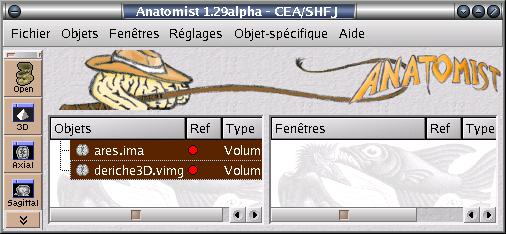
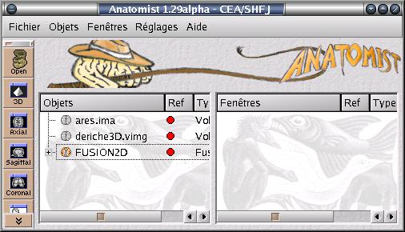
Vous pouvez accéder au contenu de cette fusion en cliquant sur
l'icone + dans la liste:
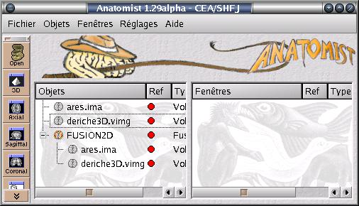
Un objet fusion se sélectionne comme n'importe quel autre
objet lorsqu'il s'agit de le mettre dans une fenêtre pour
le visualiser.
Un exemple avec une IRM T1
et le résultat d'une détection de contours 3D
avec le filtre de Deriche :
Les deux volumes à fusionner:
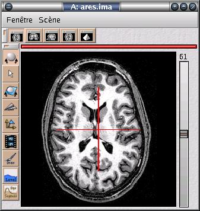
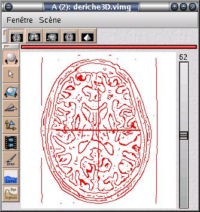
Le résultat du mode de fusion dit géométrique
(les canaux RVB sont multipliés, la couleur blanche
joue le role "d'élément neutre" transparent)
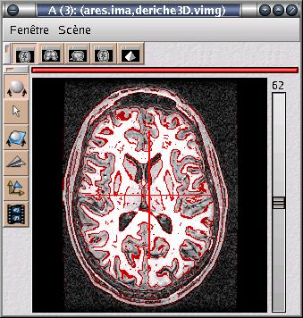
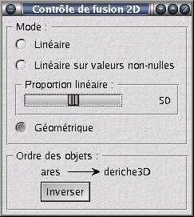
On peut accéder à un autre mode de fusion qui correspond
à une combinaison linéaire des canaux RVB. Il faut
sélectionner l'objet fusion2D et accéder au menu "Object Manipulation".
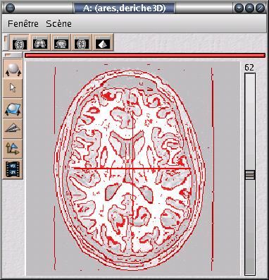
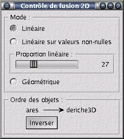
Les modes de zoom et le curseur lié sont utilisables
sur les objets fusion 2D:
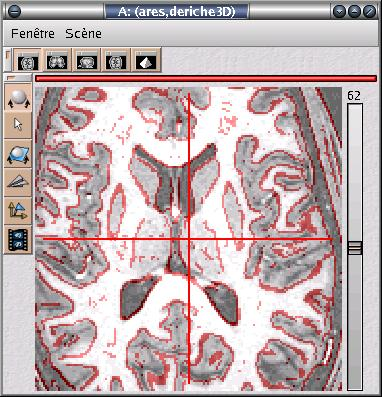
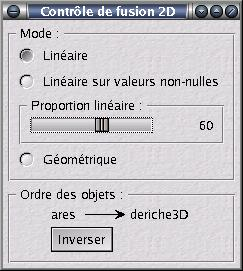
On peut également accéder aux niveaux de gris des volumes fusionnés
avec le clic gauche. Le résultat s'affiche dans la fenêtre d'où a été
lancé Anatomist:
Position: 153 118 61 0 Valeurs: ares.vimg 47 , deriche3D.vimg 10
Position: 153 122 61 0 Valeurs: ares.vimg 54 , deriche3D.vimg 8
Position: 137 108 61 0 Valeurs: ares.vimg 68 , deriche3D.vimg 19
Position: 105 107 61 0 Valeurs: ares.vimg 45 , deriche3D.vimg 18
Modifier la table des couleurs d'un des volumes fusionnés agit
sur la fusion elle même (un volume est doté de la même table
des couleurs dans toutes les fusions dans lesquelles il est impliqué):
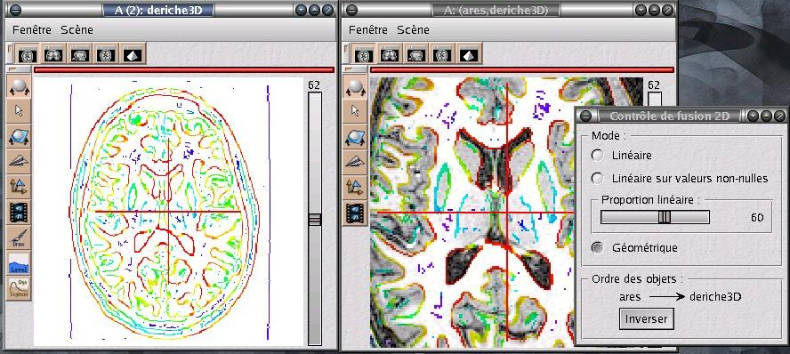
Résolutions différentes :
Les deux volumes correspondent exactement au même champ de vue,
mais l'échantillonage n'est pas le même. Cette situation est typiquement
celle des images normalisées avec SPM. Elle se gère exactement comme
la précédente.
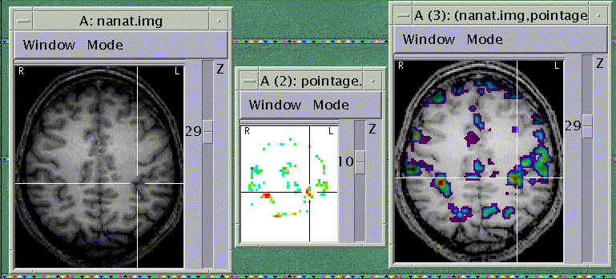
Dans ce cas, comme dans le cas précédent, le curseur lié peut
être activé entre toutes les fenêtres contenant l'un des deux
volumes ou leur fusion.
On notera que la création de la fusion passe par un rééchantillonage
trilinéaire du volume dont la résolution est la plus basse. Il n'est
donc pas étonnant d'observer des différences entre les régions activées
observées dans la fusion et la coupe de résolution plus faible qui apparaît
dans la fenêtre voisine.
Champs de vue différents :
Ce cas survient classiquement lorsque le champ de vue de l'acquisition anatomique T1
diffère du champ de vue des acquisitions fonctionnelles BOLD, ou des acquisitions
du tenseur de diffusion. Il doit être géré comme les situations où les orientations
des deux acquisitions sont différentes.
Orientations différentes :
Les orientations ou les champs de vue sont différents. Il faut spécifier
explicitement à Anatomist le mouvement rigide qui permet de passer d'une acquisition
à l'autre (une assistance implicite sera fournie à terme pour les données dont
l'orientation correspond au système proportionnel). Le mouvement rigide
doit être spécifié dans un fichier du type des fichiers créés par la
plateforme de recalage MMMP. Les fichiers .mat de SPM peuvent être convertis
de façon externe à l'aide de BrainVISA si
vous disposez de Matlab et SPM.
Le format de ce fichier ASCII
est le suivant:
Tx Ty Tz
Rxx Rxy Rxz
Ryx Ryy Ryz
Rzx Rzy Rzz
Ce format spécifie une translation T et une matrice de rotation R.
Notons R1 le référentiel associé au premier volume (l'origine du référentiel
correspond au premier voxel du volume), et R2 le référentiel associé
au second volume. Le fichier R1_TO_R2 spécifiant le mouvement rigide
qui permet de passer de R1 à R2, en dimensions millimétriques, correspond
à l'application du changement de coordonnées : X2 = R * X1 + T.
Pour indiquer à Anatomist un changement de référentiel, procédez comme suit:
Dotez respectivement chacun des volumes d'un référentiel. Le référentiel affecté à un objet est visible par le point de couleur dans la colonne "Ref" de la fenêtre d contrôle. Les objets ont normalement une repère rouge par défaut. Si ce n'est pas la cas, sélectionnez le premier volume puis accédez au menu
"Object Manipulation / Referential" et choisissez le repère rouge, ou
"new referential" s'il n'y a pas de repère rouge. Si votre opération est un
succès, un point rouge a été attribué à ce volume. Par la suite cette couleur
représentera le référentiel attribué à ce volume dans toutes les opérations de
visualisation. Recommencez l'opération pour attribuer un second référentiel,
différent du premier, au second volume. La situation devrait maintenant être
la suivante:
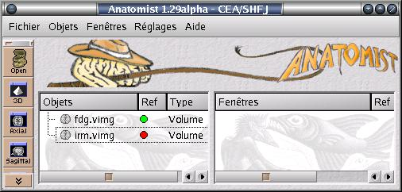
Il faut maintenant spécifier la transformation en ouvrant la fenêtre
"Referential Window" du menu "Windows". Celle-ci vous permettra
à tout instant de faire le point sur les référentiels que vous
utilisez et les transformations que vous avez déjà spécifiées.
Actuellement elle se présente comme suit:
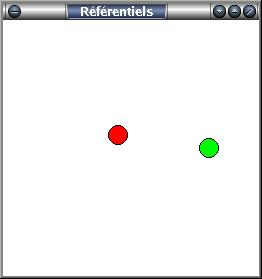
Anatomist connait deux référentiels ; l'un est vert,
l'autre est rouge. En revanche il vous faut lui indiquer
comment passer de l'un à l'autre. Pour cela tirez un trait,
clic de gauche enfoncé, d'un des disques de couleur à l'autre.
Vous accédez alors au browser de fichiers qui vous permet d'indiquer
la transformation voulue. En cas d'erreur vous pouvez effacer
cette transformation ou en inverser les deux référentiels
à l'aide de la souris (click droit). Lorsque la transformation a été spécifiée,
la fenêtre se présente comme suit:
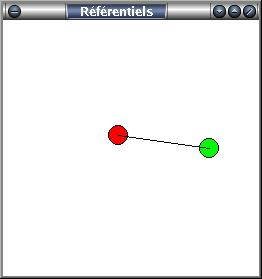
Tout est maintenant en place pour pouvoir visualiser la fusion.
Il reste cependant une ambiguïté à lever : lorsque vous
choisissez par exemple une fenêtre axiale, il vous faut préciser
si cette fenêtre est axiale pour le repère vert ou pour le repère
rouge. Le référentiel courant est indiqué par la couleur du bandeau supérieur
de la fenêtre. L'opération de changement de référentiel se réalise en
sélectionnant la fenêtre et en accédant au menu "Windows/referential", ou plus
simplement en cliquant sur le bandeau de référentiel directement sur la
fenêtre. Vous pourrez d'ailleurs par la suite modifier le référentiel d'une
fenêtre. Lorsque celui ci est grisé, la fenêtre n'a pas de référentiel
particulier et utilise le "référentiel central" qui est utilisé par défaut dans Anatomist (le référentiel rouge, normalement).
Vous devez maintenant être capable d'obtenir le résultat suivant :
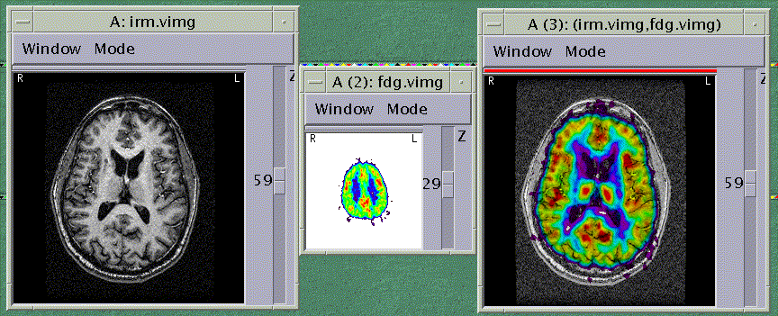
Et si vous avez compris le principe général, il vous est maintenant
possible d'afficher chacun des volumes ou leur fusion dans le référentiel
de votre choix :
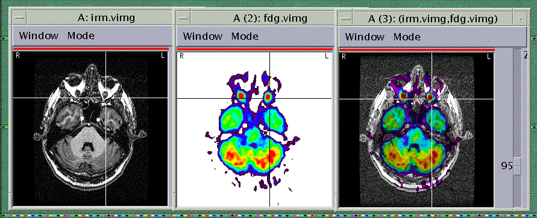
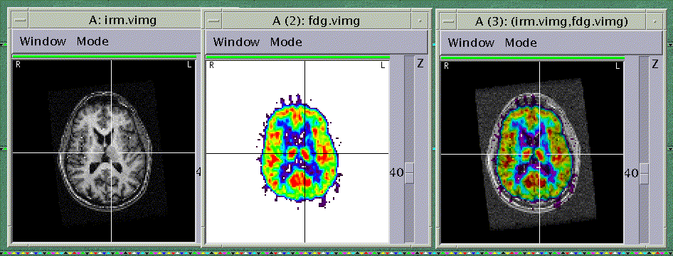
Vous noterez que les fonctionnalités de type curseur lié ou zoom
sont toujours accessibles, et cela même pour des groupes de fenêtres
dotées de référentiels distincts.
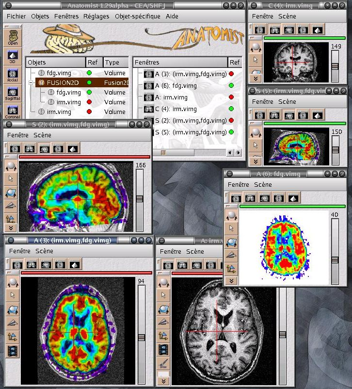